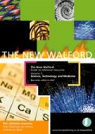

|  Buy from Amazon |
| About IR |
| Editors |
| Author instructions |
| Copyright |
| Author index |
| Subject index |
| Search |
| Reviews |
| Register |
| Home |
Lester, Ray (Ed.)The New Walford Guide to reference resources. Vol. 1: Science, Technology and Medicine. London: Facet Publishing, 2005. xix, 827 p. ISBN 1 85604 495 5. £149.95
The New Waldorf guide to science, technology, and medicine (STM) reference resources has a short sub-title 'belongs on every reference desk' and this sums up the general value of the volume nicely. For a bibliographer caught in between recent analogue past and entirely digital future of our rapidly developing 'information world' the pleasure of holding this substantial guide to the guides is close to ecstasy. The quality of print and design of the book is remarkable, the paper of high quality, the structure, lay-out and explanations transparent, the possibilities of browsing and searching as good as one can get in the printed reference book. One can only admire the diligence and commitment of the team involved in production of this book (the editor-in-chief, sixteen subject specialists, software specialists and editors).
Let's have a closer look at the reviewed volume. It covers the reference sources in science, technology and medicine produced both in printed and digital format. The changed and changing information environment is seriously taken into account by the authors. The impact of it on the reference work and resources is both discussed in introduction and visible in selection and presentation of the material. The whole range of resource categories included in the guide is displayed on the p. xviii as the elements constituting the 'information universe'. This could be criticised as a very simplistic picture, but it also has a pragmatic function to explain the grouping of the material within subject categories and fulfils it in a very satisfactory manner. In general all the introductory texts in the New Waldorf are well written and easy to read. They are genuinely aimed at the targeted audience of the 'newcomers' to the subjects and reference tools of STM. The same is true of all the aspects of the guide. In fact, this purpose and the aim to adapt to the hybrid information resources underlie all changes made to 'The Old Waldorf' listed on p. xv.
The selection criteria, however, also includes the origin and language of the sources, which are predominantly from the UK and the US and English. I also found several from Canada, Norway and France as well as some in German. That actually prompted me an idea of another short index of countries of origin and languages of sources (other than the UK, the US or English), which might help those with certain language competencies.
Another selection criteria was the 'life expectancy' of the resources, as those included had to be 'maintained in the medium to long term'. Having in mind the tendency of digital resources to disappear, it is a justified decision. I just missed more information on the actual chronological selection criteria at least for the printed non-periodical resources, although various dates were mentioned in the book (some very helpful for a user, e.g., period of selection - 2004, period when URLs were checked - 2005). The eighth (last before this) edition of Walford's Guide to Reference Materials was published in 2000. However, it is evident from browsing that TNW is not restricted to the last five years.
The guide is structured also with the user's possible needs in mind and starts (apart from the Contents table and Preface) with a Quick-start guide, a list of people involved in its preparation and '50 good websites to try first'. The simplified subject classification is well-explained and there is a particular emphasis on thirteen resource categories: from 'Introductions to subject' to 'Keeping up-to-date'. I must say that from my point of view this grouping scheme is based on very different criteria: types and forms of documents and organizations. But there are no ideal classifications and the producers of the guide tried to overcome the existing limitations by various means including cross-references, indexes and extended resource description.
I was also not very satisfied by the short introductions to subject chapters. It seems that this element could have benefited from a standardised scheme of what it includes, just as the scheme of headings and resource description on p. ix. As it is, one may find in some cases the characteristic of the subject area (Earth science), or the mode of communication within it (Mathematics), or emphasis on subject selection criteria (Clinical medicine), or characteristics of the documents in the field and characteristics of listed sources (Agriculture). In some cases the subject fields in subject groupings are characterised more extensively (then it would be more logical to have those descriptions at the start of the subject field chapter) and sometimes just enumerated. Nevertheless, these short introductions provide additional guidance to a reader together with the index headings listed after each subject heading.
The descriptions of resources follow a uniform structure and are written in a easily understood language. The description provides all essential information for resource location and also indicates the target group, the origin and provides general evaluation of the extent, reference features, and quality.
The indexes are compiled with great care and attention. The Author/Title index lists almost 8000 entries and the Topic index around 1000. This is a considerable help for information search. Users will also appreciate the explanation of how to use them in the Quick search guide. The information professionals will appreciate the list of Tools for Information Professionals at the end of subject listings: I did.
Having enjoyed the feeling of a substantial book in my hands and admired the professional competence of its producers I cannot keep myself from asking: Is there a TNW digital version? This product of committed intellectual labour should be available on the Internet as a searchable database. After all, this is the most appropriate form in the new information universe.
Prof. Elena Macevičiūtė
Vilnius University
Lithuania
September 2005
How to cite this review
Macevičiūtė, E. (2005). Review of: Lester, Ray (Ed.) The New Walford Guide to reference resources. Vol. 1: Science, Technology and Medicine. London: Facet Publishing, 2005. Information Research, 11(1), review no. R194 [Available at: http://informationr.net/ir/reviews/revs194.html]